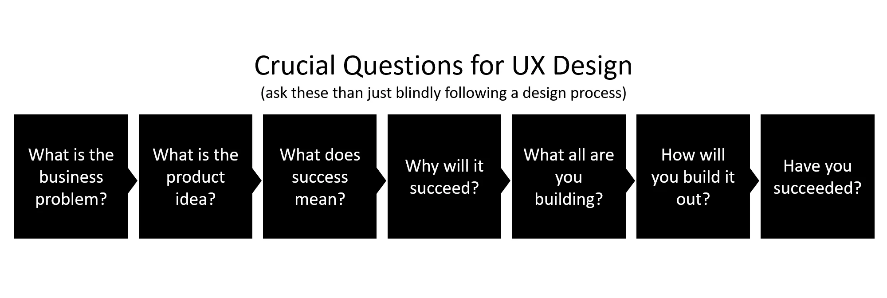
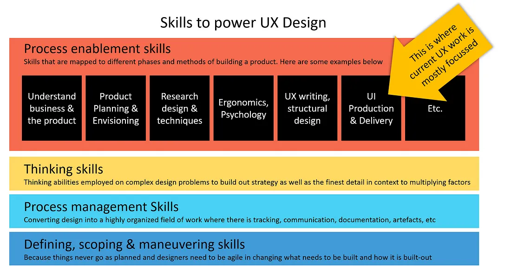
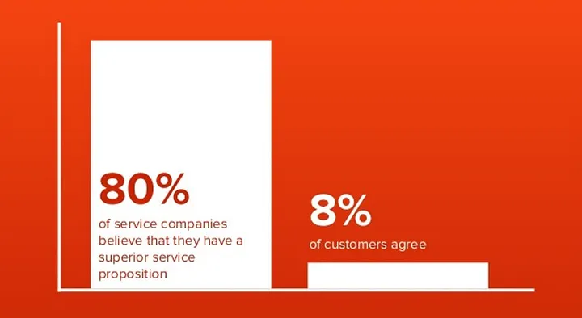
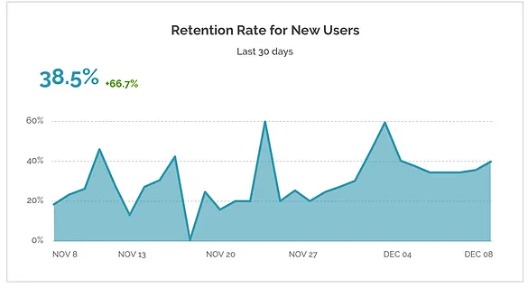

Real UX: Foundational Skills
-
UX
-
Business centric design
- Dec 2, 2019
- 9 Min read


When I interact with UX practitioners these days, I hear two types of philosophies around what they feel it means to do UX work. The first one tends to be very centered around using software such as XD, sketch, or Figma. The belief is that if you were to subscribe to many of these software and master the art of producing UI through them, then you are doing high-quality UX work. There is a tremendous focus on learning UX as a ‘production’ skill to efficiently produce design components+screens and start coding. Online courses, articles, and full-time classroom programs stress heavily on this. This is, of course, great but far from what real UX work is.
The other philosophy is around ‘design thinking’. That if we were just to follow the magical process of Empathize, Define, Ideate, Prototype, and test, then you will inevitably produce great quality UX output. I wish it were that simple, and I could merely handout a process document to the teams I manage and achieve UX nirvana. Design thinking is, at best, a high-level ideology that is far removed from the specificities of building a real & high-quality product.

Tools will keep changing and are often different based on the modality you are designing for. Processes are great too but the real meat lies in the ‘thinking skills’ that a UX practitioner needs to learn to employ.
If you are looking to build skills to power real UX work, then let us look at the following representation.

In this post, I will cover a few process enablement skills. Let’s get started!
What is the business problem?
Designers have a very tough time with the fact that a significant portion of the project/product building time goes into understanding and defining what needs to be done.
When a business problem is presented to a designer, often, the problem is not fully understood with an altogether eagerness to start building something. It is not the designer’s fault as the typical designer’s brain is trained to seek gratification from the act of creating and making. An important component missing from conventional design education (both vocational and formal) is the way to really ‘Get’ the business. Designers are not able to understand key business terms/concepts and struggle with grasping the actual intent in executive conversations.
How can designers upskill in this area? Now designers may not be able to attend full MBA programs to add this aspect to their arsenal, but they can start by familiarizing themselves with some of the key terms. Find a glossary of crucial business terms (example) to get started, but remember that each company/client that you work with will have their own set specific to the industry and each organization. You could also consider going through a business basics book.
The other challenge is for designers to be able to really understand the executive ask. Whats really is the business problem? Taking the stated problem at face value could mean that your UX design work may not end up delivering any value at the end. How many projects do you remember, where the designs don’t push the needle or where teams end up realizing that the product/feature they built wasn’t needed. Quite often, it has to do with a lack of depth of understanding of the business problem itself. Designers need to be able to determine how the stated problem is associated with the core nature of the business itself and how it strategically makes sense to do this work. Without this, you will end up building the wrong thing or going after the wrong KPI or not making a significant dent in the metric. To decipher business information, designers need a good understanding of the nature of the business they are catering to. Some of the critical things you will need to understand…
The business model: Get an understanding of various business models at play out there (read about some models). It is interesting to know that newer business models are being created at an increasing rate in the startup world. UX design work is very tightly linked to the business model, so get a good understanding of what models your company/client uses and keep an eye out for new innovative ones. Here is a tool called the business model canvas that you could use to make sense of it all.
Strategic & political imperatives: Also good to know how the design work request aligns with strategic or political imperatives across the company/client. Understand the org structure and the forces at play for you to get a real sense of what you are building and for whom. This is not just about political maneuvering but also getting a real understanding of the intent behind building the product. Every executive has a different reason to approach the same problem and may expect a different outcome. Here are two perspectives, one internal and the other external.
The real budget & time: The ask for design work can often be very idealistic. It is essential to understand the real budget that will be put behind the project and what is the ETA for launch. Designers usually take the project for face value and plan for a lot more effort than there is an appetite for. Being able to scope the task, effort, and timeline for the work is tricky, but designers have to learn this absolutely!
Product Understanding
With a good sense of the business problem, we are well on our way to doing good UX design work. Now we have to understand how the business metrics are associated with the actual design of the product. I very frequently see UX audit documents, and what surprises me is the generality with which the designs/products have been investigated. Reviewing the design of a product through a lens of a laundry list of heuristics is easy and doesn’t give any value. It is crucial that designers understand, the levers that are at play in the design and are influencing the business KPIs. What precisely in the design causes drop-offs at point X of the flow? To understand this tricky piece, designers need to…
Understand funnel metrics & available data: Gathering data from across the company can be a great way to get a sense of what is already going on. Customer call logs, emails, etc. along with funnel metrics can provide a fair understanding of salient problems ailing the product.
Understand design psychology & ergonomics: Ergonomics and psychology are vast fields of study. A very specific part of these could apply to the project you are working on. To start with, it is important for you to go through enough examples of how ergonomics and psychology influence design. Here is a list of books you could go through (these are classics but still good!)…
Basics: Design of Everyday Things or Don’t make me think
A bit more: Hooked or 100 Things Every Designer Needs to Know About People
Getting to understand psychology and ergonomics is excellent, but even more relevant is building the skill on how they specifically influence the metrics on the product you are working on. Breaking down the user’s journey through the product into micro-moments and then evaluating how ergonomics or psychology influence that moment in the context of the desired business outcome, is a skill built out of rigorous practice.
Research Design
The data internally available within the company may not be enough to give you a real sense of what users are thinking or what challenges they may be facing with the product UX design. Research can help plug this gap. Now user research, as it is classically understood, is this templatized way connecting with users to capture insights. Companies, agencies, and researchers employ surveys, focus groups, contextual inquiries, and in-person interviews as siloed templates hoping that they would provide the best data. In reality, research is messy and complicated. No one template fits the research objectives. The study has to be very carefully designed for each research objective/context. Some existing process steps & techniques can be reused/mixed, but the format and construct of conducting the research could be very different in every case. For example, how would you research user behavior on a particular task within a physical store could differ from how you would study other tasks in the same environment. Here is a good read on mixed-research design and how to use it…Research Design: Qualitative, Quantitative, and Mixed Methods Approaches. And some interesting research techniques to give you a basic level of understanding.
Then, research design needs to be done based on budget, stage of the product, and other complex factors. For example, to mitigate budget, a small product company could spread small pieces of frugal testing across the year to get great value from research for their product. In another case, focused small pieces of research could be run through design sprints when a product is launched to help stabilize the many design unknowns and slowly ease the rocking boat.
User Anticipated Service Experience

With research data in hand, designers can’t just start diving into designing screens. Designers need to determine how to serve customers across various channels & touchpoints first. Often user experience design is siloed into one channel as it is perceived to be easier to manage and build for, or there is a strong belief that fully automating the experience across only one channel will make it superior. When one evaluates the service experience anticipated by real users, the results might show that they don’t care about the channels you build but interact with your service across multiple touchpoints for reasons beyond just ease of use/access. Understanding these expectations from the service experience perspective is key to designing a journey that matches the user and reduces the services anticipation gap between what your company delivers and what the user expects.
To provide a cohesive experience across touchpoints, it is key to design an architecture that gives consistency in structure, behavior & terminology. This greatly aids the user’s ability to make sense of your companies touchpoints and perform tasks without having to relearn everything continually. Consider getting a strong understanding of service experience design as this will be essential for you to make sense of complex problems that span across user interaction moments. (Book: Pervasive Information Architecture)
Metric-Led Design

Designing for software is imagined by designers as a series of screens separately designed and then strung together to create an experience. This is fundamentally flawed and quite misaligned with the way human biology perceives experiences through the various senses. ‘Experience’ is an endless series of sensations that tell a story and engage the mind. For the visual sense, it is like a movie playing through its narrative, each moment of the narrative engaging the brain with emotions. Similarly, while designing for software experiences, it is key to think of it as designing micro-moments that take users through a task/flow and achieve the desired business outcome. When you think of experience design in this way, the screens & components become less consequential, and you start designing like you were creating a movie, where you craft psychology and ergonomics into each moment with great empathy in user behavior and drive towards the KPIs.
Summary
So here is a start for you to make sense of the world of designing experiences, where it is not just about learning how to use a screen production software. I hope you enjoyed the read…stay tuned and keep learning!